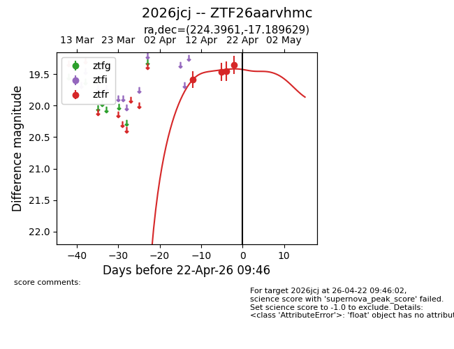
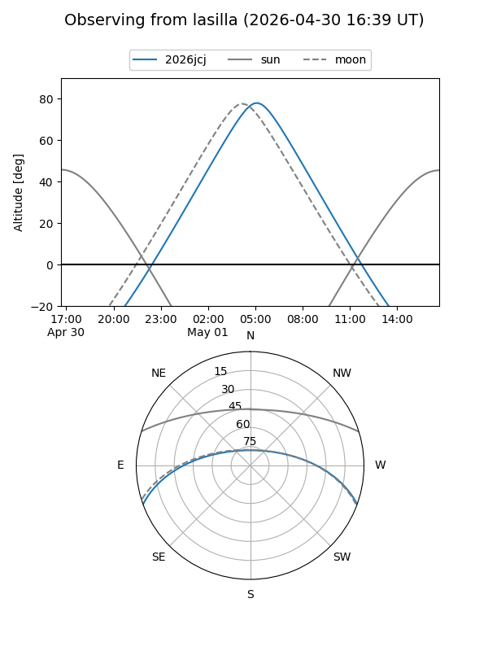
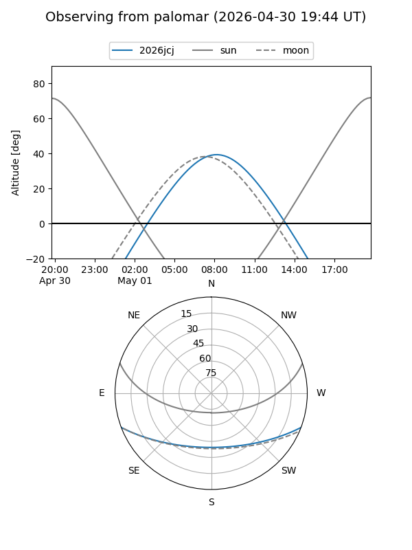
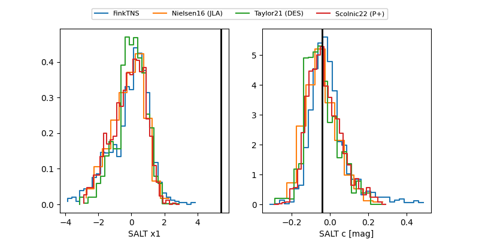

2026jcj
Target 2026jcj at 2026-04-22 09:51
Aliases and brokers:
FINK: link
Lasair: link
ALeRCE: link
TNS: link
YSE: link
alt names
ZTF26aarvhmc (ztf,fink_ztf)
2026jcj (tns,yse)
Coordinates:
equatorial (ra, dec) = 224.3961,-17.18963
equatorial (HMS+DMS) = 14:57:35.07,-17:11:22.66
galactic (l, b) = (341.1618,+36.14992)
Flags:
Photometry:
last ztfr=19.36
4 ztfr detections
Lightcurve

Visibility


Additional plots
